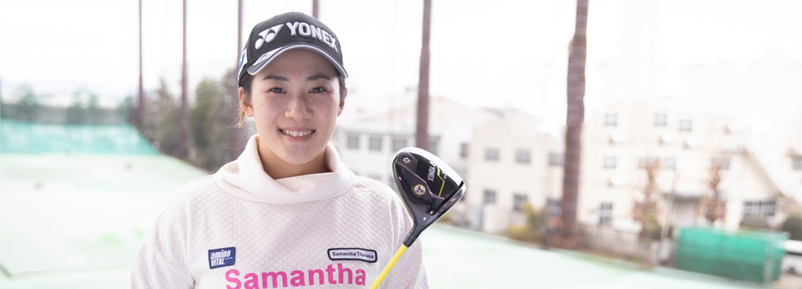
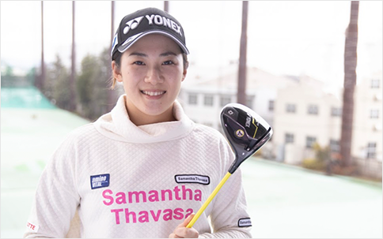

INTERVIEW SUZUKA YAMAGUCHI ゴルフで世界を目指す。
プロゴルファー 山口 すず夏
今回、ネイティブキャンプの魅力を語ってくれるのは、20歳のプロゴルファー 山口すず夏選手。
若干20歳にして、海外を舞台に活躍する山口選手。ネイティブキャンプはプロゴルファーとしての活動に、
どのような影響や効果を与えているのか山口選手にインタビューしました。


- ゴルフを始めたのはいつですか？
- ７歳の時ですね。父が昔から趣味でゴルフをしていて、兄や私を練習場に連れて行ってくれてたんです。 自分も一緒にボールを打っていたら、ゴルフ好きになり、本格的に始めました。最初は明確な目標はありませんでしたが、いつの日からか「やるならプロゴルファーを目指そうと」いう気持ちになりました。
- どのくらい練習していたのでしょうか？
- 当時は、家の近くのゴルフスクールに週１回通い、後は練習場で自主練習という感じです。12歳くらいからは毎日練習してましたね。夕方から夜にかけて、１日２～３時間練習していました。
- ネイティブキャンプの英会話レッスンを楽しんでいらっしゃる様子を拝見しましたが、 元々、英語好きだったのでしょうか？
- 英語は中学校に入ってから興味を持ちました。学校の授業でも体育が一番好きで、その次に英語が好きでした。家の近くに米軍の座間キャンプがあり、そこの英会話レッスンに週に一度通ってました。
- 普段ネイティブキャンプを使って、どのように英語を学習していますか？
- ネイティブキャンプは実は2020年５月にコロナで自粛期間に入ってから始めたのです。 アメリカでもお世話になっている日本人トレーナーの方に「いいよ」と薦められて始めました。 ネイティブキャンプでは、日常英会話を学んでいて、毎日、最低でもひとコマは学習するようにしています。
- 英語学習に関して、目標や改善点などはありますか？
- 英語は中学校に入ってから興味を持ちました。学校の授業でも体育が一番好きで、その次に英語が好きでした。家の近くに米軍の座間キャンプがあり、そこの英会話レッスンに週に一度通ってました。
- ネイティブキャンプの良い点を教えてください。
- 普段、日本では英語を話す機会はあまりないですが、アメリカでゴルフをしていると英語を使う機会ばかりです。ネイティブキャンプで毎日ネイティブの人と話して英語を学べるというのは、その感覚を保っておくためにも大切です。学習を進め、少しずつ難しくはなってきていますが、日々楽しんで学習しています。
- これまでに英語でのコミュニケーションで苦労したことはありますか？ また、話せるようになって変わったことはありますか？
- ツアー転戦中、ホテルで何かを頼むにしても、昨年まではなかなかうまく通じないことがあり通訳を頼んだり、翻訳機を使っていました。ネイティブキャンプを始めてから、英語力はまだまだですが、ホテルやレストランで何か頼むなどシンプルな日常会話なら出来るようになりました。
- 世界で活躍するプロゴルファーとして、英語の必要性を感じていますか？
- 昨年はずっとアメリカ人のキャディさんをお願いしていて、英語でコミニケーションとる必要がありました。ただ、深い話ができるほどでの英語力なかったので、より英語力を高めれば、プレイし易い環境になったと思います。 また昨年、アメリカのIMGアカデミーでテクニカルコーチに２週間見ていただいた機会があったんです。その時、コーチに教えていただく内容は理解できたのですが、私の聞きたいことを英語で伝えることは、まだできませんでした。 伝えたいことも相手に正しく伝えるためにも、英語は必要ですね。 ゴルフに限らず、海外は「言ってなんぼ」という部分もあるので、自分の考えや意見は積極的に伝えなければならないですから。
- 世界各国の外国人プロゴルファーと話す機会はありますか？
- 同い年で、プロになったのも同年という、似たキャリアのゴルファーが一人いるのですが、彼女の母国語は英語。今年一緒に練習ラウンドを回ったのですが、昨年よりも英語での会話が途切れず続いたので、英語力が少し上がっていると実感できました。 よりコミュニケーションが取れて、練習ラウンドもより楽しかったですね。 ただ、選手同士では普通の会話はするのですが、技術的な話をする機会はあまりないですね。
- アメリカのツアーに参戦されていましたが、アメリカでの生活はいかがでしたか？
- この２年間、日本と海外を行ったり来たりしていますが、慣れれば楽しいですね。 試合会場がアメリカの西から東まで多岐にわたり、毎週移動があるので、大きな荷物を持っての転戦が大変でしたね。レンタカーを借りたり、ホテルを移動したりする時のやり取りでも、「もっと英語が話せたら」と感じていました。 開催地のスタッフに直接電話して、疑問点を訊くとかまで、自分の英語力でできるようになりたいです。
- 世界のプロゴルファーで憧れている選手はいますか？ また、ご自身はどのようなゴルファーになりたいですか？
- この２年間、日本と海外を行ったり来たりしていますが、慣れれば楽しいですね。 試合会場がアメリカの西から東まで多岐にわたり、毎週移動があるので、大きな荷物を持っての転戦が大変でしたね。レンタカーを借りたり、ホテルを移動したりする時のやり取りでも、「もっと英語が話せたら」と感じていました。 開催地のスタッフに直接電話して、疑問点を訊くとかまで、自分の英語力でできるようになりたいです。
- 日本のスポーツ選手が世界で活躍するために必要なことは何だと思いますか？
- ゴルフなどのスポーツでは、アメリカなど英語圏が本場という競技も少なくないので、実力は勿論ですが、それに加え英語を話せることも大切だと思います。 能力や技術はあれど、英語でのコミュニケーションをとれずに、成功できなかった人もいると思うので。インタビューとかも、英語で話せるようになったら、海外のファンや関係者も応援してくださると思うので、自分はそれを目指してやっています。
- 好きな英語のフレーズはありますか？
- 「STEP BY STEP」ですね。今の自分もそうなんですが、ゴルフでも英会話でも、少しずつ地道にやること。 そうすることで、結果はついてくると思うので、自分にとってこれが大切な言葉ですね。
- 世界に挑戦したいと考えている方にメッセージをお願いします。
- 自分は今ゴルフを通じて、アメリカに行って、全然違う文化に触れるという、20歳ではなかなかできない経験をさせていただいていると思います。 色々な人とコミュニケーションをとることで、自分の考え方も変わり成長できますし、広い視野を持てるかもと思っています。そういった意味でも、英語が話せるとより良いと思います。
- 今後の目標や夢を教えてください。
- まず来年はシード権をとって１勝すること。「勝ってなんぼ」の世界なので、やっぱり優勝したいですね。 いずれは、世界ランキング１位になりたいです！

山口 すず夏 ／ プロゴルファー SUZUKA YAMAGUCHI
2015年「全米女子オープン」日本地区予選会を2位でフィニッシュし、日本人史上最年少14歳で本戦出場。
2018年「オーストラリア女子アマ」で日本人初優勝を達成すると、同年に米国女子プロゴルフツアーの最終予選「Qシリーズ」で36位入りを果たす。
2019年のツアー出場権を獲得。
2018年に18歳でプロ転向を表明し、宮里藍、畑岡奈紗に続く“女子高生プロ”として、2019年の「ISPSハンダ ヴィックオープン」でツアーデビューを飾った